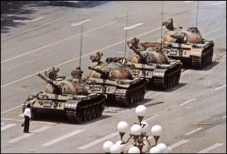

Experiment 5 - Evolutionary Impressions

Active Image
Best Image
Mutation rate (%):
Active score:
Exploration rate: fps
Best score:
Description
Recreates an inspiring image, renders parameterized images, and adjusts its own designs to optimize an evaluation score.
Technical
- This project integrates inspiring images that are selectable from the drop-down on the display page.
- The design renders the shapes to produce results that look related to the inspiring images.
- The mutation process makes incremental changes the image. The rate parameter allows the user to almost stop exploration by sliding the rate down to 1% and max exploration at 99%.
Annealing
The most interesting part of this experiment was generating the different shapes that make up the image. I was interesting seeing the controlled randomness be put to work.
Reflection
This assignment wasn't too complex, and I had fun because of the lighter workload.